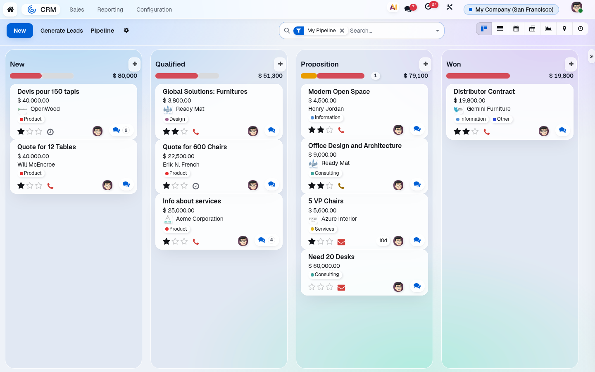
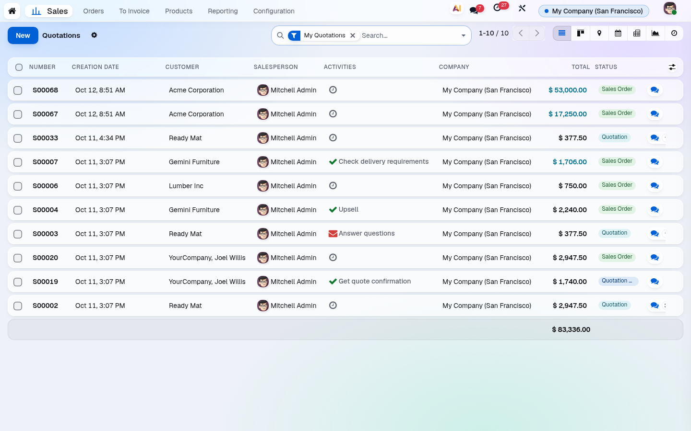
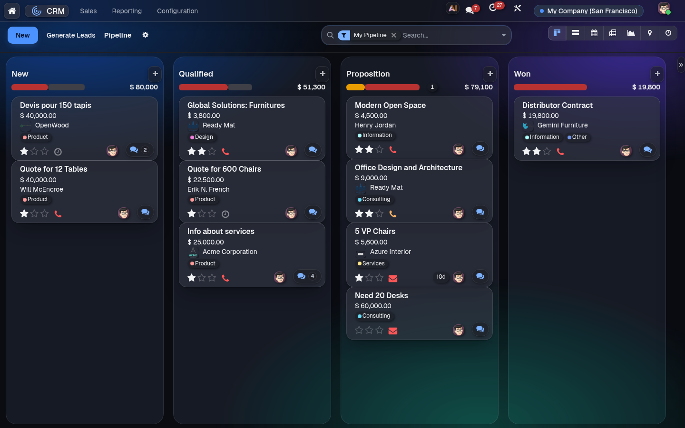

EOD - Backend Theme
A frosted-glass Odoo: calm, minimal, and in your company's colours.
Odoo 19 · Community and Enterprise · light and dark · nothing sent to outside services

Odoo 19 · Community and Enterprise · light and dark · nothing sent to outside services
Every screen sits on translucent panes over a soft colour field. A form becomes a set of panes (status, title, field groups, lines, chatter), list rows are slim panes, kanban lanes are faint glass.
Lagoon: one blue for the main action, a pale blue for "you are here", near-black text. Or pick a ready-made palette (Graphite & Mint, Iris & Apricot), take the colours from your logo, or choose your own. The colour field follows your palette.
Every colour is adjusted until its text passes WCAG AA, in light and dark mode, measured against the pane as it really looks. Panes stay at least two-thirds opaque, and text never sits on the field itself.
Only containers blur; list rows and cards never do. Without backdrop-filter, with the system's "reduce transparency" setting, or with the user's own Transparency preference, panes turn nearly opaque.



Settings › Backend theme › Theme colours shows every role with its contrast ratio in light and dark before you save. Printed documents and e-mails can take the same colours in one click.

aic_theme), which installs with it. Turn the
theme off at any time in Settings without uninstalling.